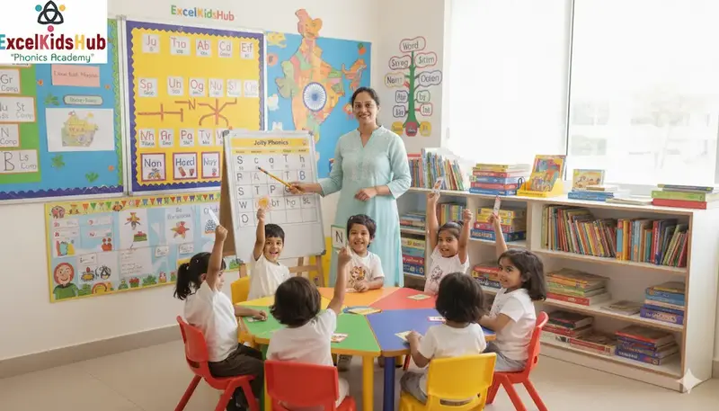
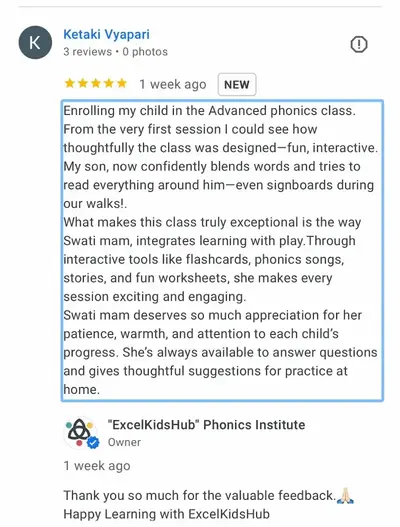
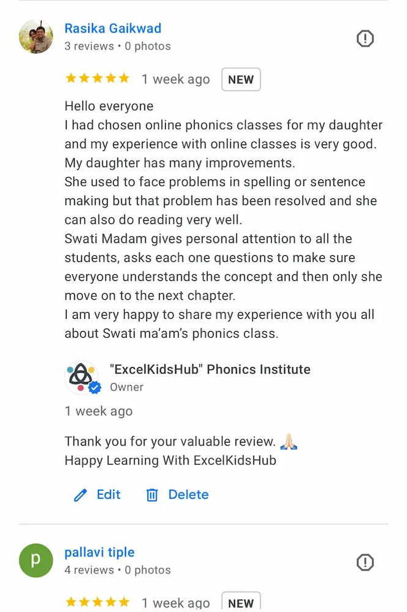
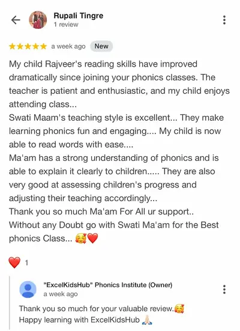
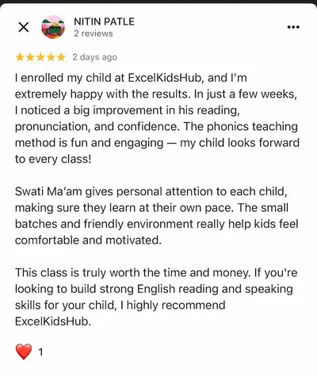
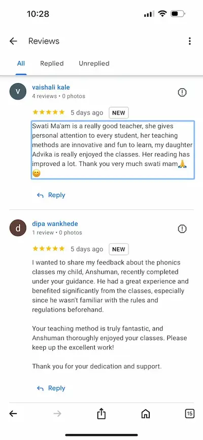

Structured phonics training to improve reading, spelling, fluency and comprehension skills in children.
Book Free Demo View ScheduleLetter sounds, blending & early reading foundation.
Digraphs, diphthongs & fluency mastery.
Reading comprehension & creative expression.
ExcelKidsHub Phonics Academy offers online and offline phonics classes in Dhanori Pune. Parents from Dhanori, Vishrantwadi, and Lohegaon choose our structured reading program to build strong literacy foundations in children aged 4–10 years.

Swati Deshmukh is a Master’s qualified educator with 10+ years of teaching experience in English and early literacy. She is a UK-Certified Jolly Phonics Trainer specializing in structured phonics instruction.
At ExcelKidsHub Phonics Academy, Dhanori Pune, she helps children become fluent readers, confident communicators, and strong spellers through systematic and engaging teaching methods.
📍 Dhanori, Pune | 📞 +91 8793135679

"My child started reading independently within 2 months!"
Google Review ⭐⭐⭐⭐⭐
"Very structured and professional phonics classes in Dhanori."
Google Review ⭐⭐⭐⭐⭐
"Best phonics academy in Pune. Highly recommended."
Facebook Review ⭐⭐⭐⭐⭐
"Small batches and personal attention made a big difference."
Google Review ⭐⭐⭐⭐⭐
"My son improved spelling and confidence."
Facebook Review ⭐⭐⭐⭐⭐Children between 4 to 7 years benefit most from structured phonics training.
Yes, we offer both online and offline batches.
Most children show improvement within 2–3 months.
Inside Lakewood Preschool, Dhanori, Pune – 411015.